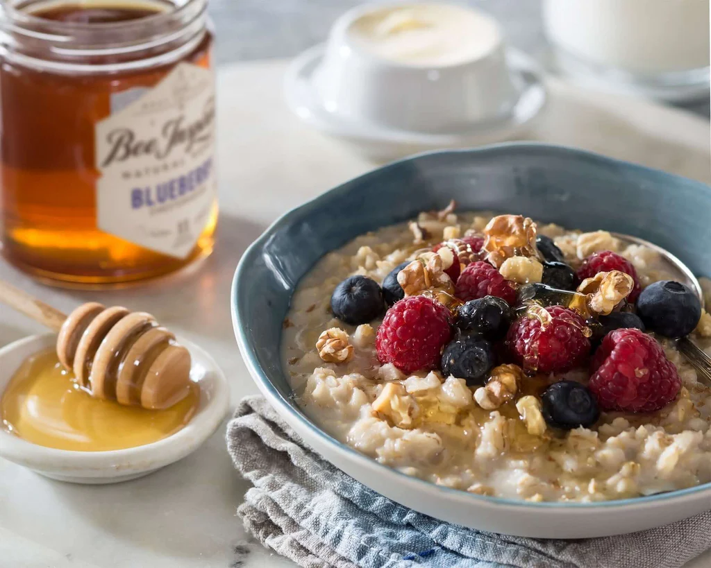

A hearty morning plate of golden fried eggs, crisp bacon, buttered toast, and sautéed mushrooms. Warm, savory, and filling — the kind of breakfast that prepares a Hobbit for gardening, walking, or an unexpected journey.

Thick, creamy porridge drizzled with honey and served alongside fresh bread with jam and browned sausage links. Comforting and wholesome, this meal warms both the stomach and the spirit at the start of the day.